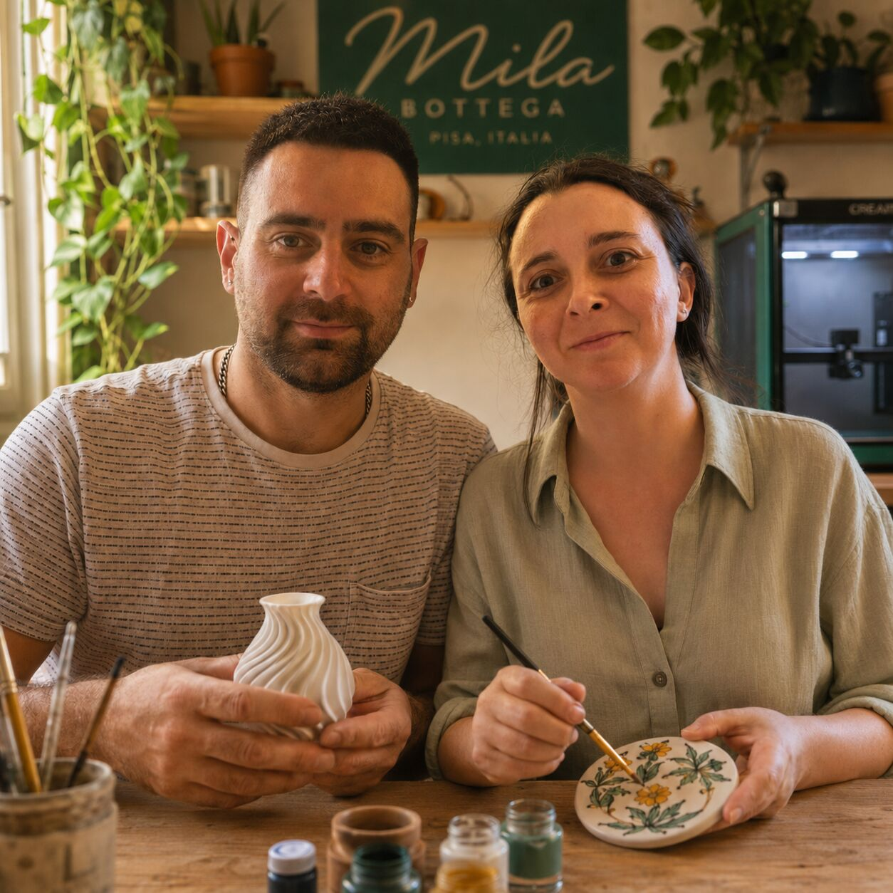

Bottega di oggetti in 3D · Pisa
Oggetti in 3D, pensati e fatti per te.
Mila Bottega disegna e stampa in 3D oggetti personalizzati per la casa, la cucina, i regali, le feste. Uno alla volta, su ordinazione, rifiniti a mano. E alcuni li dipingiamo con il pennello.
Cosa facciamo
Tu lo immagini. Noi lo facciamo.
-
Scegli
Un vaso, una targa, un regalo con il nome: parti da un oggetto della collezione. Ne aggiungiamo di nuovi un po' alla volta.
-
Personalizza
Nome, colori, forma, motivo. Per alcuni oggetti c'è l'anteprima in 3D: lo giri con un dito e ti prendi il tuo codice.
-
Lo facciamo e spediamo
Ordini su Etsy. Noi lo stampiamo strato per strato, lo rifiniamo a mano e te lo mandiamo a casa.
La collezione
Tante cose diverse, una sola bottega.
Alcune le puoi già ordinare, altre stanno arrivando. Le aggiungiamo qui man mano che escono dal laboratorio.

Fatto a mano · Dipinto a mano
La stampante fa la forma. Il resto lo fanno le mani.
Ogni pezzo nasce strato dopo strato, nel colore vero del filamento. Poi passa da noi: lo controlliamo, lo rifiniamo, lo proviamo. E alcuni oggetti li dipingiamo a mano, uno per uno, con il pennello.
- Colori veriTanti oggetti prendono colore già in stampa, da filamenti colorati.
- PennelloAltri li decoriamo a mano: non ce ne sono due uguali.
Scopri Mila Bottega
Da dove vuoi cominciare?
Collezione
Tutti i nostri oggetti, quelli pronti e quelli in arrivo.
02Crea il tuo
Scegli un oggetto, personalizzalo e guardalo in 3D.
03I colori
22 filamenti veri, da abbinare come preferisci.
04Il laboratorio
Chi siamo e come nasce ogni pezzo, dalla stampa al pennello.
05Domande
Tempi, materiali, cura e come si ordina.